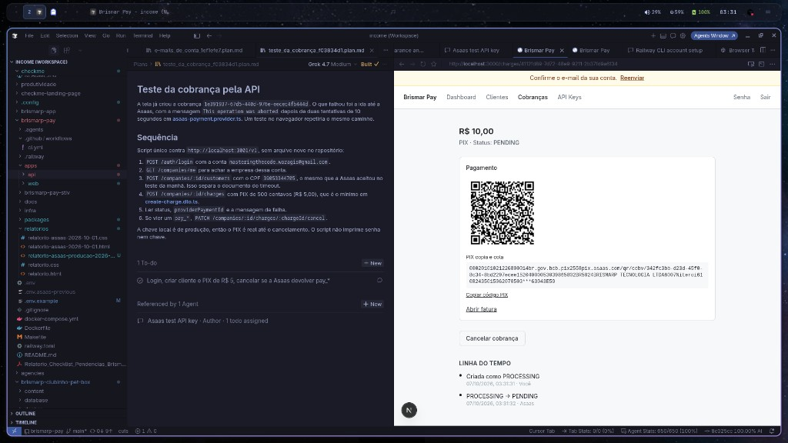

PIX de R$ 10,00 criado
Às 03:31, uma cobrança PIX de R$ 10,00 foi gerada no painel local e registrada na Asaas. Em um segundo ela saiu de PROCESSING e ficou PENDING, pronta para o pagador.

A linha do tempo da própria tela guarda os dois momentos: criada como PROCESSING às 03:31:31 e atualizada para PENDING às 03:31:32. O lojista pode enviar o código ao cliente ou abrir a fatura da Asaas. Enquanto o PIX ainda não foi pago, a cobrança pode ser cancelada no mesmo painel.
Como o lojista cobra
-
Entra no painel Com e-mail e senha. O menu leva a Clientes, Cobranças e API Keys.
-
Cadastra o cliente Nome e CPF ou CNPJ. O e-mail do cliente, quando informado, segue junto para a Asaas.
-
Abre Nova cobrança Escolhe PIX, informa o valor e o cliente. O menor valor aceito é R$ 5,00. A mesma tela também gera boleto e cartão.
-
A Asaas devolve o PIX O Brismar Pay pede o pagamento na Asaas e guarda o identificador. A tela passa a mostrar QR Code, copia e cola e o link da fatura.
-
O cliente paga Quando a Asaas confirma o recebimento, o status da cobrança é atualizado e a linha do tempo ganha o novo evento. O saldo do lojista acompanha essa confirmação.
O que o painel guarda
Cada cobrança fica com valor, meio de pagamento, cliente, status e a sequência de eventos. Nada é apagado da linha do tempo: o histórico só recebe linhas novas. A lista de cobranças mostra o estado atual, e o detalhe mostra o QR Code enquanto o PIX está pendente.
Quem integra por API usa a mesma criação de cobrança, com chave de idempotência para uma repetição não gerar dois PIX. O painel do navegador é o caminho usado nesta prova.